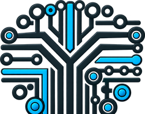

Een senior specialist
Inzet van een senior technisch projectmanager of netwerkconsultant, interim of op projectbasis.

YAH—adviesHet YAH-Advies-ecosysteem
Niet ieder project vraagt hetzelfde team. U houdt één senior aanspreekpunt; daaromheen stellen we per opdracht de specialisten en leveranciers samen die nodig zijn.
Complexe infrastructuurprojecten realiseert u niet alleen. YAH-Advies brengt ervaren technische specialisten, leveranciers en projectprofessionals bij elkaar en bewaakt de samenhang tussen techniek, organisatie, planning, kosten, risico’s en kwaliteit.
We werken met een flexibel netwerk. Per opdracht bepalen we welke mensen en partijen nodig zijn, wat zij leveren en hoe de verantwoordelijkheden zijn verdeeld. De inzet en beschikbaarheid spreken we vooraf af.
Inzet van een senior technisch projectmanager of netwerkconsultant, interim of op projectbasis.
Een passende specialist uit het netwerk, geselecteerd op de techniek, context en fase van uw project.
Een multidisciplinair team onder regie van YAH-Advies. Eén aanspreekpunt en duidelijke afspraken over het resultaat.
Een selectie uit de samenwerkingservaring achter YAH-Advies. Deze vermelding betekent geen formele partnerstatus of aanbeveling door de genoemde organisaties.
KPN · Eurofiber · DELTA
Cegeka · Giant ICT · Capgemini · GBICT · Conclusion · Bechtle · Proact
Routz · KPN Security
WL-ICT · SPIE · Strukton · Van Dorp
Ascom · Verkerk · Simac ICT
Loxia · InTraffic
Avesqo
ICT vanaf Morgen
AniPro ICT B.V. · Almere
De indeling geeft een expertisegebied weer; partijen kunnen meerdere disciplines bedienen.
Ook samenwerkingservaring met YaWorks, WeKnowtice, denhague, Preworker, Dijafit, Circle8 en Seven Stars.
De samenwerking en inzet verschillen per opdracht.
KPN · Cegeka · Van Dorp · WL-ICT
Conclusion · Loxia · InTraffic · Strukton · Bechtle · Avesqo · BAMMM · DitLan · Cyolo
KPN · DELTA · Simac ICT · WL-ICT
SPIE · rayman-ict
ICT vanaf Morgen · Proact
Ascom
Samenwerking binnen de projectervaring bij deze organisaties; de betrokken partijen verschillen per opdracht.
Aanvullende expertise via het netwerk. Voor websites, apps, software, zonne-energie, laadoplossingen, batterijsystemen en technische energieprojecten organiseren we waar passend gespecialiseerde partners. Scope en verantwoordelijkheden worden per opdracht afgesproken.
Contact
Vertel waar u tegenaan loopt. Van een gerichte second opinion tot een compleet projectteam: we beginnen bij uw situatie en het resultaat dat u nodig heeft. U spreekt direct met een senior projectmanager.
Een korte voorbereiding van circa vijf minuten. U houdt zelf de samenvatting en mailt die naar ons.YAH-advies B.V. · KvK 88792315 · Almere